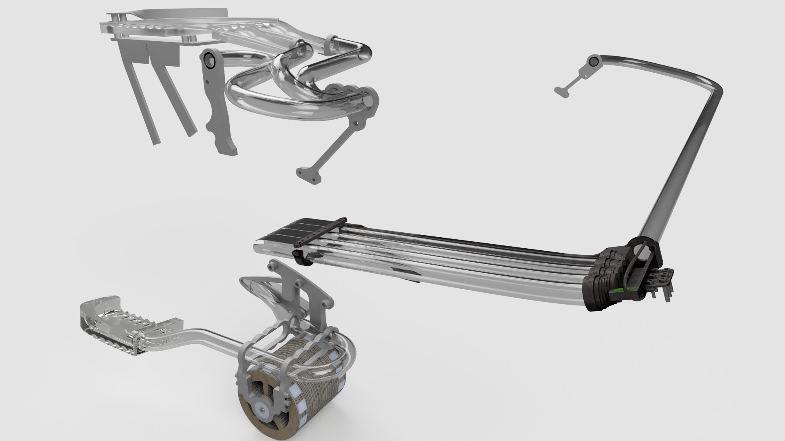
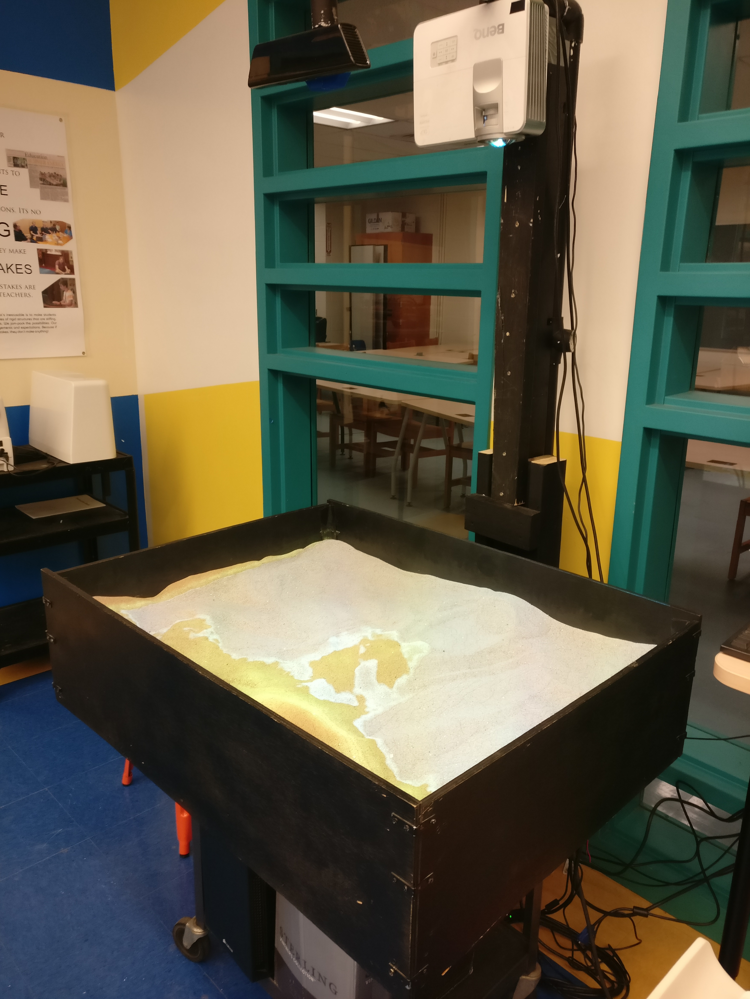
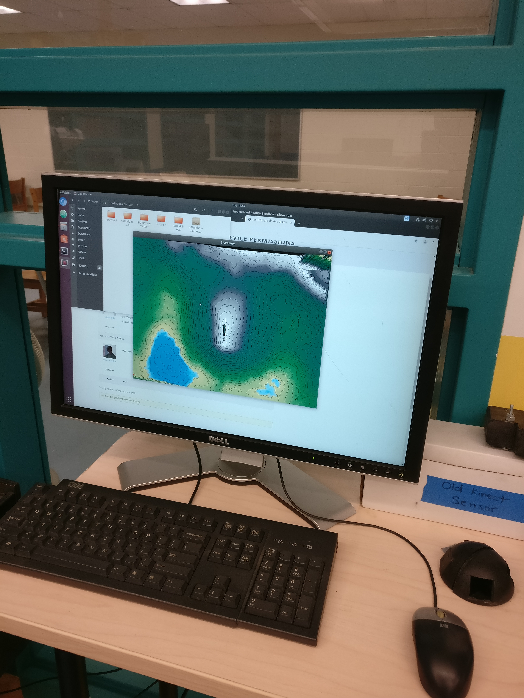
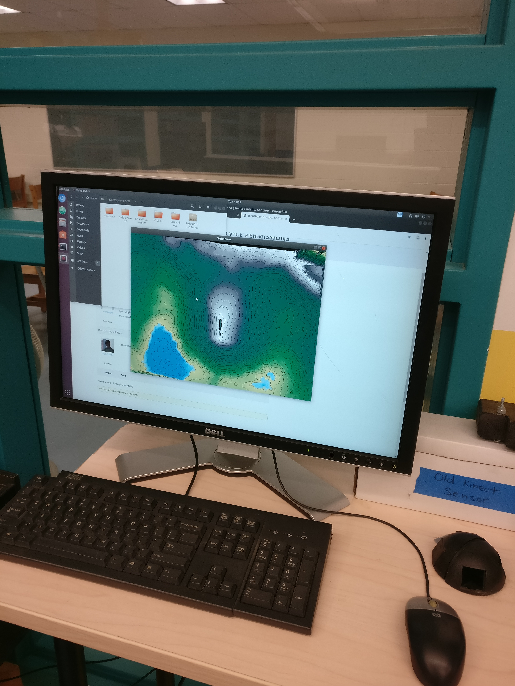
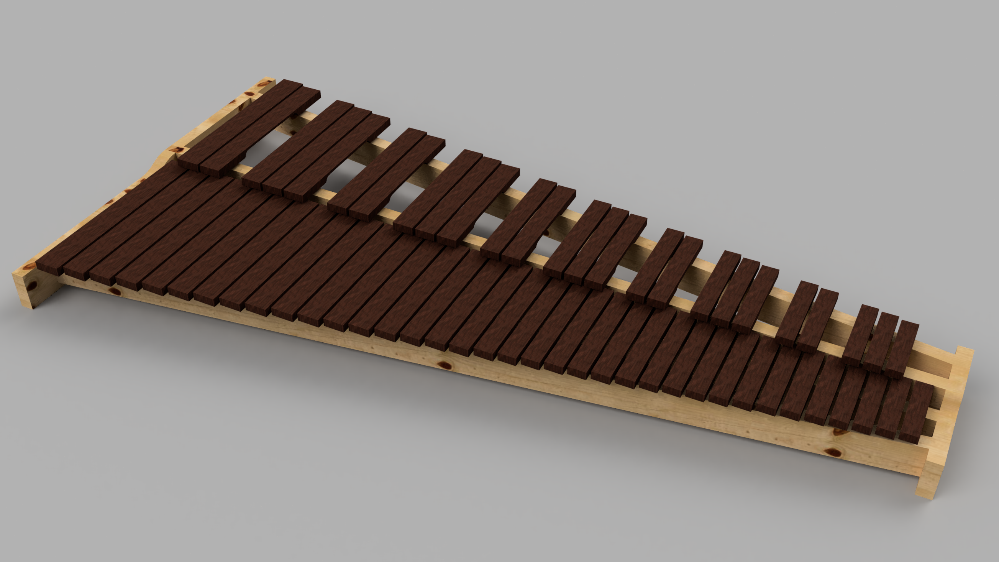
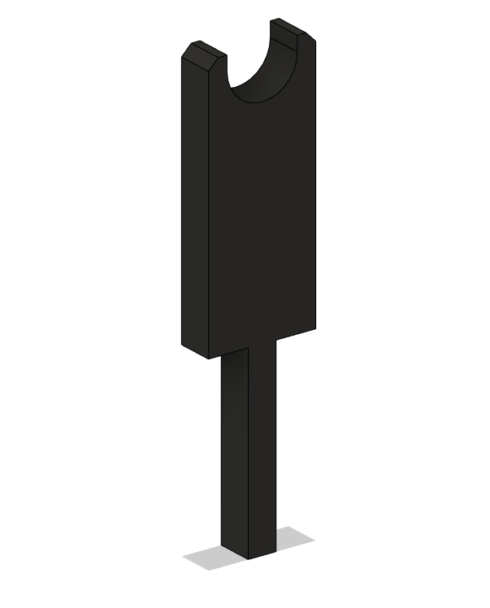

I'm Alex Zeng, a mechanical engineering student at Northeastern University that is interested in learning as much as I can about mechatronics and mechanical design. When I'm not doing homework or studying, I enjoy making things, tinkering, playing music, and gaming.
An online collaborative effort of 140+ volunteers to optimize the loading of a 6,000+ part assembly, pushing the limits of Fusion 360 and requiring a massive PDM database to manage.
Learn MoreThe Marble Machine X (MMX) has been crazy musician Martin Molin's dream for the past 4 years, and I've been following along his journey on YouTube since the release of his first Marble Machine back in 2016. These kinetic machines use dropped marbles to strike various instruments and play music. When he announced in June 2020 that he was looking for CAD help from the community, I instantly jumped in and I haven't regreted it one bit.
A render of the Marble Paths Pre-assembly (the assembly I am team leader of)
The MMX is modeled in Fusion 360, originally incorporating every bolt, screw, and nut that would be used in its mechanical construction. This, however, is resource-intensive and taxing for Fusion 360 to run, so the CAD team's main goal has been to defeature the assembly by removing unnecessary parts and simplifying modeled features. This process is intended to lose data on the parts, since the main priority of this first phase is to reduce loading times for the master assembly.
The first part that I have modeled for the project as a CAD Team Collaborator is the Drum Marble Track. This part connects between the Drum Funnels (which collect the marbles after they hit the drums) and the Marble Collector (which funnels all the marbles back into one track). This part was pesky due to the poor implementation of 3D lines in Fusion 360 and weird detection of 3D lines for the Sweep command. Additionally, this part has gone through multiple iterations, first using a derived master sketch to properly link the Drum Track to the Collector, then using a master sketch for the entire Marble Track system to link up to the various parts within clearance.
A Pan Around the Drum Marble Track
Next is the Demagnetizing (Demag) Wheel. Demagnetization was not in the original MMX design, but implemented after discovering that the marbles were still magnetized to each other after being lifted toward the top of the machine. This part was rather simple to defeature since many of the plates used to create it were designed with manufacturing in mind, so they could be combined into single sketches and extrudes.
A Pan Around the Demagnetization Wheel
Lastly, the DivideBy4. It uses a weighted plate that would tip over when four marbles roll into the part, hence dividing by four. Other than removing screws, this part could not be defeatured much since it uses several steel plates that are welded together to form a funnel after the tipping plate.
A Pan Around the Divide By 4 Mechanism
After two months in, the organizers of the CAD Team put out a call for volunteers willing to lead subassembly teams. This gave birth to the CAD Team Leader role, which was to combine the individuallly modelled parts of a given subassembly to check for interferences between parts. I was able to become team leader of the Marble Paths subasssembly, which includes the parts that the marbles travel through on the top of the machine. Here are some pictures of the Marble Paths parts assembled:
A sandbox that uses a projector, Xbox 360 Kinect, and powerful computer to project an augmented reality topographic map on the sand's surface.
Learn MoreThe Augmented Reality Sandbox (SARndbox) is a project originally created by a team of motivated students at my high school, which was showcased at the LearnLaunch Conference at Harvard in 2016. Since then, it was sitting unused and the Director of Strategic Innovation wanted to bring it back to life with modification that would allow frequent usage during school hours.
The main issue with the sandbox design was that it was made to be portable and relatively lightweight, which caused the frame and Kinect holder to sag over the years. The objectives for the new sandbox was to make it stationary, but also require minimal software recalibration, so the frame had to be made more rigid. My first step was to model the new frame design in CAD software (Fusion 360). The model can be viewed here.
I chose wood as the frame material since there was an abundance of it in the engineering room and it is easy to work with given the available power tools. I cut 2x4s to shape, then drilled them to their respective positions. I kept the PVC pipe that held the Kinect over the sandbox, although reinforcing its front with wood and also allowing permitting a mount for the projector.
Lastly, since the computer running the topographical software had been repurposed, the operating system and augmented reality sandbox software had to be reinstalled and recalibrated. After a lot of troubleshooting Ubuntu command line and reading program documentation, I was able to get the program to read Kinect 3D camera data and interpret it to project a topographic surface map on the sandbox.
 

Images of the Augmented Reality Sandbox. Leftmost is a full view of the sandbox, middle is a closer view of the sand and topographic projection, and rightmost is the software running on the computer.
A cheap, 1-valved tuba created using PVC pipes and 3D printing to explore the feasibility of additive manufacturing in making musical instruments more accessible.
Learn MoreClick here to see an archive of some of my CAPStone work
After growing discontent with using the old, weathered tuba lent from my high school, I began to ponder about tubas and their accessbility. The cheapest beginner tubas cost over $1000, so it's not feasible to ask a new tuba player to purchase an instrument that they will outgrow should they choose to continue playing. It would be amazing to have a cheap, beginner tuba...
That's when I thought of combining 3D printing, a technology just entering the consumer space at the time that I was interested in, with other accessible parts to construct a tuba that would be cheap enough for a beginner player to use until they decide whether tuba is for them.
Enlarged image of me and the tuba
CAPStone Showcase Poster
CAPStone Research Paper - Viability of Additive Manufacturing in Brass Instruments
A 4.3 octave practice marimba that breathes life back into second-hand synthetic bars, combining woodworking and 3D printing.
Learn MoreI've always wanted to build my own marimba from raw materials due to being significantly cheaper than purchasing a new instrument. However, I have limited access to tools at my house, so such an idea is not impossible, but quite costly once tool purchasing costs are factored in. One day, while browsing the listings on a used percussion group, I found a seller for used marimba bars for $800. For context, the cheapest 4.3 octave marimba costs around $2500, with most of that cost coming from the skilled labor required for tuning of its bars. I thought this was a great deal and perfect way to get a practice instrument, so I bought the bars.
 Once the bars arrived, I started by measuring them with calipers, and then modelling them in Fusion 360. Creating 3D models for the bars is convenient for designing and visualizing a frame, as well as gauging the total length of wood for the frame. A run to Lowes for materials, and I began constructing the frame. The frame consisted of lumber 2x4s, cut using a handsaw after marking lines with a speed square, then drilled together with 3 inch construction screws.
Modeling the marimba in CAD also allowed me to design posts that would hold the paracord that runs through all the bars in a row. These were 3D printed in sets of 20 on my printer for a total of 120 posts. Holes that were slightly smaller than the diagonal of the posts were drilled into the frame to allow for a press fit that was loose enough to pull posts out in case they snapped.
Finally, I sanded the frame and applied two layers of polyurethane wood finish. This might be unnecessary since the frame will always be indoors, but it certainly looks nice. The final marimba plays nicely and makes a perfect practice instrument.


{kind=link}
{kind=link}
{kind=link}
{kind=link}
{kind=link}
{kind=link}
{kind=link}
{kind=link}
{kind=link}
{kind=link}
{kind=link}